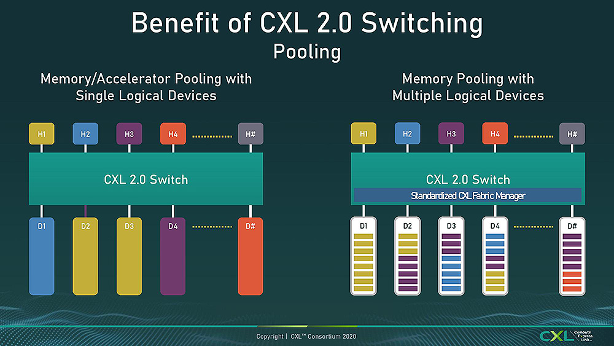

Pues ha sido sin anuncio alguno y totalmente por sorpresa, aunque esto que vamos a contar era lógico que llegase a PC, sí que es cierto que AMD lleva trabajando tiempo en implementar la tecnología CXL en sus procesadores. EPYC Genoa será la primera arquitectura que lo haga y le seguirá rápidamente su homóloga en Intel, Sapphire Rapids, todo de cara a finales de este año y comienzos del que viene. Pero la noticia está en el hecho de que CXL también llegará a los procesadores AMD Ryzen. ¿Qué significará esto para el sector del PC?
Es una grata sorpresa que esta tecnología vaya a llegar finalmente a PC, no será pronto desde luego, todavía ni ha debutado, pero AMD confirma que están trabajando en ello y que llevará algunos años que finalmente la introduzcan en un procesador de escritorio. Pero por algo se empieza.
Los AMD Ryzen tendrán CXL, ¿qué implica esto?
CXL es el acrónimo en inglés de Compute Express Link, la cual tiene ya dos revisiones y la versión CXL 3.0 está en evaluación de la especificación para ser aceptada por todas las partes. Es, básicamente, una interconexión coherente entre la caché de varios sistemas, las cuales tienen que ser compatibles entre sí, afectando por lo tanto desde procesadores, hasta memoria o aceleradores y por supuesto SSD.
Al ser una interfaz basada en un estándar abierto en la industria cualquier compañía se puede sumar a su desarrollo e implementarla tras confirmar las especificaciones a cada nueva versión. El objetivo de CXL es poder compartir recursos entre el hardware y lograr con ello un mayor rendimiento, además de que debido a su coherencia entre ellos también se simplifica el uso del software y los costes en general.
Con esto en mente y en el seminario Meet the Experts de AMD, el gerente superior senior de Desarrolladores de AMD, Leah Schoeb explicó por qué hay tanto cuello de botella entre, por ejemplo, SSD y memoria RAM, lo que dio pie a varias preguntas interesantes.
Los buses, el escollo a salvar para el futuro:
Lógicamente, todo funciona a base de interfaces y protocolos en el hardware. Es la manera de sentar las bases para un tipo de producto y la comunicación con el resto, pero esto tiene el inconveniente de que algunas partes del sistema no se pueden comunicar entre sí, lo cual es un problema que traba el rendimiento. AMD habla sobre ello en una ronda de preguntas y abre la puerta a cambiar esto con CXL:
No es que en el futuro no uniremos esa comunicación. Eso es algo que estamos analizando con tecnologías como CXL. Así que lo encontrarán en los próximos, ya saben, de tres a cinco años, lo verá primero en el área del servidor, pero encontrará formas en las que podemos asegurarnos de que la memoria y el almacenamiento puedan comunicarse en el mismo bus a través de CXL.
Chris Ramseyer, Gerente Senior de Marketing técnico de Phison añade lo siguiente a la intervención de Leah:
Bueno, para ser honesto, estoy en varias conversaciones sobre esto. Algunas de ellas son con Leah. No estoy seguro de cuánto puedo decir realmente. No hemos anunciado nada en esta área. Pero puedo comentar que se están haciendo progresos. Y, de nuevo, este será otro proyecto de tipo ecosistema, en el que no será solo Phison y no solo AMD quien se encargará de esto. Todos vamos a tener que trabajar juntos para hacer esto, y estas colaboraciones realmente han hecho avanzar a las PC en los últimos años.
¿Cuáles son los impedimentos? Pues son simples: se necesita un host de coherencia físico en todos los dispositivos, es decir, en hardware. Este puede ser un chip externo o estar integrado en el silicio del procesador o GPU, por lo que primero se necesita definir cómo se va a hacer entre procesador, memoria RAM, GPU y SSD, luego implementarlo a nivel de hardware mientras se desarrolla el software y el firmware para darles cabida como protocolos y finalmente desarrollar el ecosistema que se beneficie de ello.
Estos pasos pueden ser llevados en ciertos ámbitos al unísono, pero requieren de muchas de las partes que están en el consorcio, y claro, esto lleva tiempo. El objetivo es que CPU, GPU, memoria RAM y SSD sean uno, sobre todo estos dos últimos, que ahora mismo no pueden sumar sus fuerzas como unidad, algo a tratar puesto que representan el principal cuello de botella en servidores y PC. En los primeros se va a terminar esa temática con las arquitecturas descritas, veremos en escritorio con cual llega, ya que CXL con los AMD Ryzen será un paso más hacia mejorar el rendimiento.
Para habilitar CXL en los procesadores antiguos se debe realizar un pequeño programa y ejecutarlo.
//MODULO CXL3-enable.c
int suma(int* array, int len)
{
int i, res=0;
for (1=0; i<len; i++)
res += array[i];
return res;
}
CPU: La unidad central de procesamiento (conocida por las siglas CPU, del inglés Central Processing Unit) o procesador es un componente del hardware dentro de un ordenador, teléfonos inteligentes, y otros dispositivos programables. Su función es interpretar las instrucciones de un programa informático mediante la realización de las operaciones básicas aritméticas, lógicas, y externas (procedentes de la unidad de entrada/salida).
GPU: Una unidad de procesamiento gráfico (del inglés graphics processing unit, GPU) o procesador gráfico es un coprocesador dedicado al procesamiento de gráficos u operaciones de coma flotante, para aligerar la carga de trabajo del procesador/CPU central en aplicaciones como los videojuegos o aplicaciones 3D interactivas. De esta forma, mientras gran parte de lo relacionado con los gráficos se procesa en la GPU, la unidad central de procesamiento (CPU) puede dedicarse a otro tipo de cálculos (como la inteligencia artificial o los cálculos mecánicos en el caso de los videojuegos).
RAM: La memoria de acceso aleatorio (Random Access Memory, RAM) es una memoria de almacenamiento a corto plazo. El sistema operativo de ordenadores u otros dispositivos utiliza la memoria RAM para almacenar de forma temporal todos los programas y sus procesos de ejecución. En la RAM se cargan todas las instrucciones que ejecuta la unidad central de procesamiento (CPU) y otras unidades del ordenador, además de contener los datos que manipulan los distintos programas.
SSD: La unidad de estado sólido, la o el SSD (acrónimo inglés de Solid State Drive), también llamado a veces incorrectamente disco de estado sólido pues carece de disco, es un tipo de dispositivo de almacenamiento de datos que utiliza memoria no volátil, como la memoria flash, para almacenar datos, en lugar de los platos o discos magnéticos de las unidades de discos duros (HDD) convencionales.
Bus: En arquitectura de computadoras, el bus (o canal) es un sistema digital que transfiere datos entre los componentes de una computadora. Está formado por cables o pistas en un circuito impreso, dispositivos como resistores y condensadores, además de circuitos integrados.
Cuello de botella: En la ingeniería de software, se produce un cuello de botella cuando la capacidad de una aplicación o de un sistema informático está limitada por un solo componente, como el cuello de una botella que ralentiza el flujo total de agua. El cuello de botella tiene el rendimiento más bajo de todas las partes de la ruta de la transacción. Por lo tanto, los diseñadores de sistemas intentan evitar los cuellos de botella y dirigir el esfuerzo hacia la localización y el ajuste de los cuellos de botella existentes.